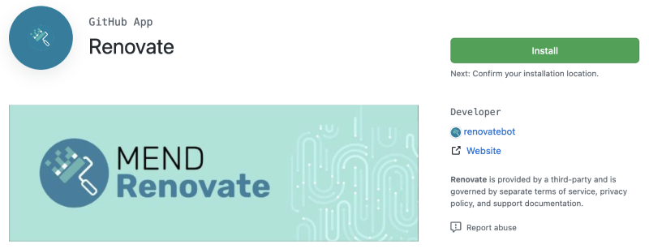
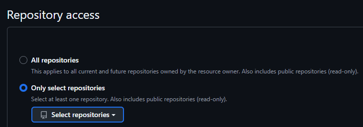
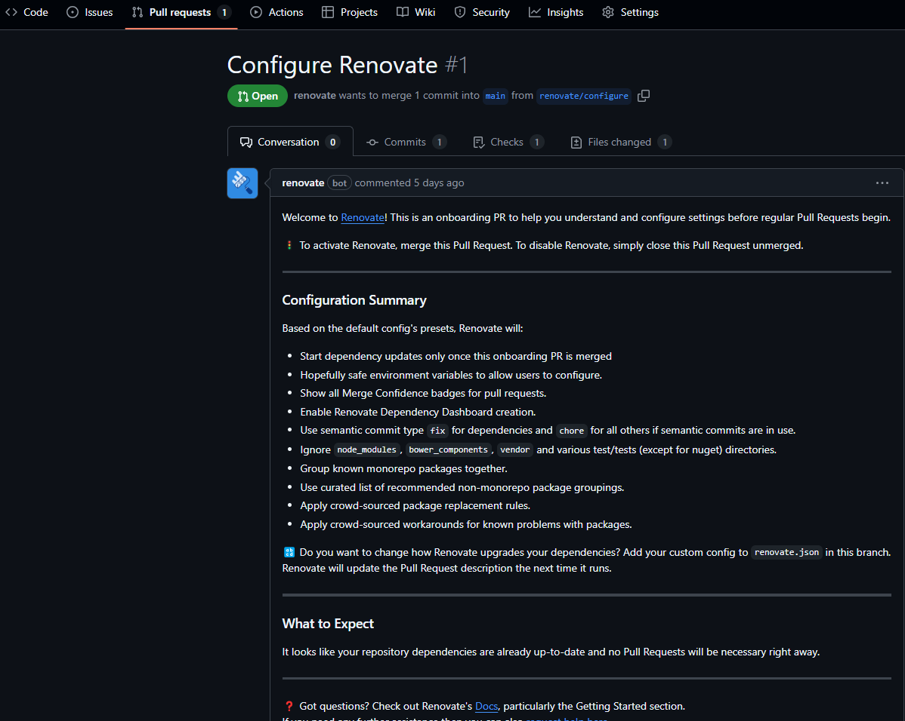

In this section, you will learn how to add Renovate to your GitHub repository to automatically update dependencies.
The first step is to visit the Renovate app page and select the Install button:
Click on the "Install" button to proceed with the installation.
On the repository selection screen, you'll decide which repositories to enable Renovate for. Renovate automatically ignores:
This means you can safely enable Renovate for all repositories without worrying about unnecessary scans. However, most users prefer to run Renovate on selected repositories.
Once you have enabled Renovate on a repository, you will get a "Configure Renovate" PR (Pull Request) that looks something like this:
Hier können Sie die Entwicklung Ihres Zählers über die Zeit beobachten.
Sie können die Ansicht auf Ihren eigenen Zähler beschränken.
Experimentieren Sie mit verschiedenen Einstellungen:
Nutzen Sie diese Zeit, um die Funktionen des Monitoring Labs kennenzulernen und mit den verschiedenen Visualisierungsoptionen zu experimentieren.